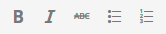

The examples 1-6 come from the WAI Tutorials - Images.
- Image used alone as a linked logo
- Logo image within link text
- Icon image conveying information within link text
- Stand-alone icon image that has a function
- Image used in a button
- An editor interface
- Image of text used as a linked logo (1)
- Image of text used as a linked logo (2)
- A print preview icon
- A search icon
- A submit button
Image used alone as a linked logo
The following image is the only content of a link that leads to the W3C home page. It has the text alternative “W3C home” to indicate where the link will take the user. The next example, “Logo image within link text” example, discusses what to do when there is more text in the link to identify the destination. This example is from the WAI Tutorials Images.
<a href="https://www.w3.org/"> <img src="w3c.png" alt="W3C home"> </a>
Note: In this situation, the logo is also an image of the text “W3C”, but in this case, its primary function is to link to the homepage, so the word “home” was added to the text alternative.
Logo image within link text
In this example, the W3C logo is used to supplement text within a link that leads to the W3C home page. The image does not represent different functionality or convey other information than that already provided in the link text, so a null (empty) value is applied, (alt=""), to avoid redundancy and repetition. In effect the image is a decorative adjunct or visual cue to the link text. This example is from the WAI Tutorials Images.
<a href="https://www.w3.org/"> <img src="w3c.png" alt=""> W3C Home </a>
Icon image conveying information within link text
In this example, the image follows text within a link to inform users that the link will open in a new window. It has the text alternative “new window” to convey the meaning of the icon. This example is from the WAI Tutorials Images.
<a href="https://www.w3.org/" target="_blank"> W3C Homepage <img src="new-window.png" alt="new window"> </a>
Stand-alone icon image that has a function
The following image is an icon representing a printer to denote print functionality. It has the text alternative “Print this page” because its purpose is to activate the print dialog when it is selected.
<a href="javascript:print()"> <img src="print.png" alt="Print this page"> </a>
Image used in a button
The following image is used to give the button a distinct style. In this case, it is the button to initiate a search request and is an icon representing a magnifying lens. The text alternative for the image is “search” to convey the purpose of the button.
<input type="image" src="searchbutton.png" alt="Search">
An editor interface
In this example, a portion of an editor interface is displayed. Each button has an icon representing an action a user can take on content they are editing. For users who cannot view the images, the action names are included within the alt attributes of the images.
<ul> <li><button><img src="b.png" alt="Bold"></button></li> <li><button><img src="i.png" alt="Italics"></button></li> <li><button><img src="strike.png" alt="Strike through"></button></li> <li><button><img src="blist.png" alt="Bulleted list"></button></li> <li><button><img src="nlist.png" alt="Numbered list"></button></li> </ul>
Image of text used as a linked logo (1)
In this example, a link contains a logo. The link points to the W3C web site from an external site. The text alternative is a brief description of the link target. This example is from EXAMPLE 24 of HTML 5.3.
<a href="https://w3.org"> <img src="images/w3c_home.png" width="72" height="48" alt="W3C web site"> </a>
Image of text used as a linked logo (2)
This example is the same as the previous example, except that the link is on the W3C web site. The text alternative is a brief description of the link target. This example is from EXAMPLE 25 of HTML 5.3.
<a href="https://w3.org"> <img src="images/w3c_home.png" width="72" height="48" alt="W3C home"> </a>
NOTE: Depending on the context in which an image of a logo is used it could be appropriate to provide an indication, as part of the text alternative, that the image is a logo. Refer to HTML 5.3 section §4.7.5.1.19 Logos, insignia, flags, or emblems.
A print preview icon
In this example, a link contains a print preview icon. The link points to a version of the page with a print stylesheet applied. The text alternative is a brief description of the link target. This example is from EXAMPLE 26 of HTML 5.3.
<a href="preview.html"> <img src="images/preview.png" width="32" height="30" alt="Print preview."> </a>
A search icon
In this example, a button contains a search icon. The button submits a search form. The text alternative is a brief description of what the button does. This example is from EXAMPLE 27 of HTML 5.3.
<button> <img src="images/search.png" width="74" height="29" alt="Search"> </button>
A submit button
<form action="http://example.com/prog/text-read" method="post"> <input type="image" name="submit" src="button.gif" alt="Submit" /> </form>